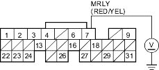
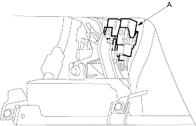
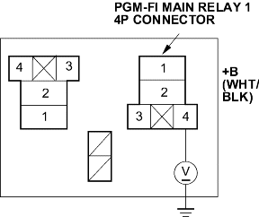

- Turn the ignition switch OFF.
- Measure voltage between ECM/PCM connector terminal E7 and body ground.
ECM/PCM CONNECTOR E (31P)

Wire side of female terminals
Is there battery voltage?
YES - Go to step 45.
NO - Go to step 42.
- Remove the PGM-FI main relay 1 (A).

- Measure voltage between the PGM-FI main relay 1 4P connector terminal No. 4 and body ground.

Wire side of female terminals
Is there battery voltage?
YES - Go to step 44.
NO - Repair open in the wire between the No. 6 ECU (ECM/PCM) (15 A) fuse and the PGM-FI main relay 1. 
- Check for continuity between the PGM-FI main relay 1 4P connector terminal No. 3 and ECM/PCM connector terminal E7.

Wire side of female terminals
Is there continuity?
YES - Test the PGM-FI main relay 1, refer to the '01 Civic Shop Manual on this CD (see page 22-80). If the relay is OK, substitute a known-good ECM/PCM and recheck, refer to the '01 Civic Shop Manual on this CD (see page 11-313). If symptom/indication goes away, replace the original ECM/PCM.
NO - Repair open in the wire between the PGM-FI main relay 1 and the ECM/PCM (E7).